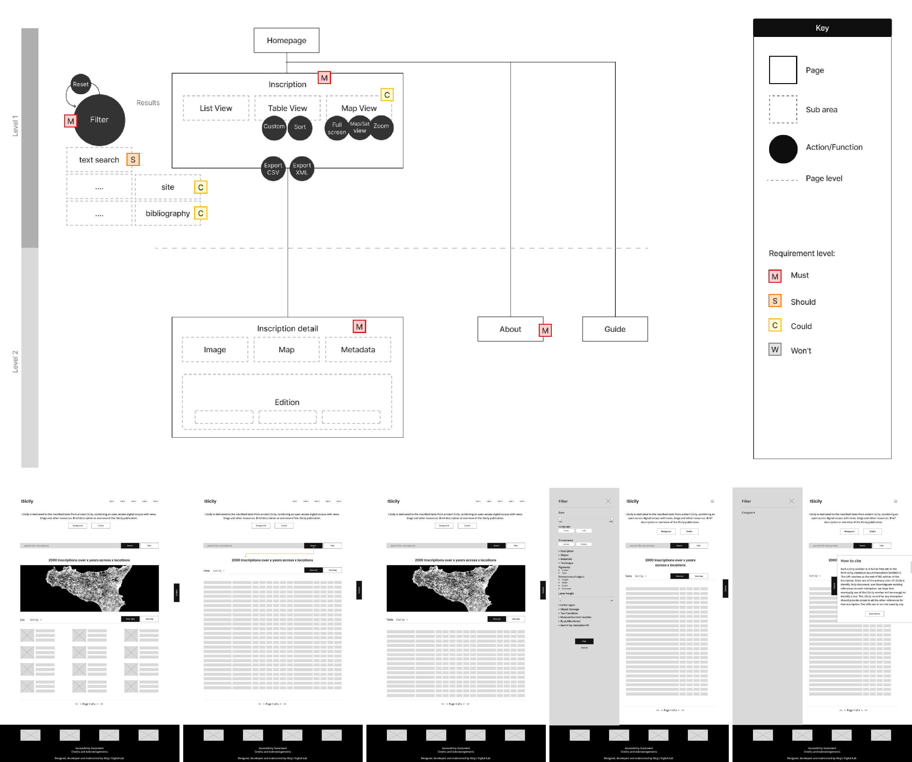
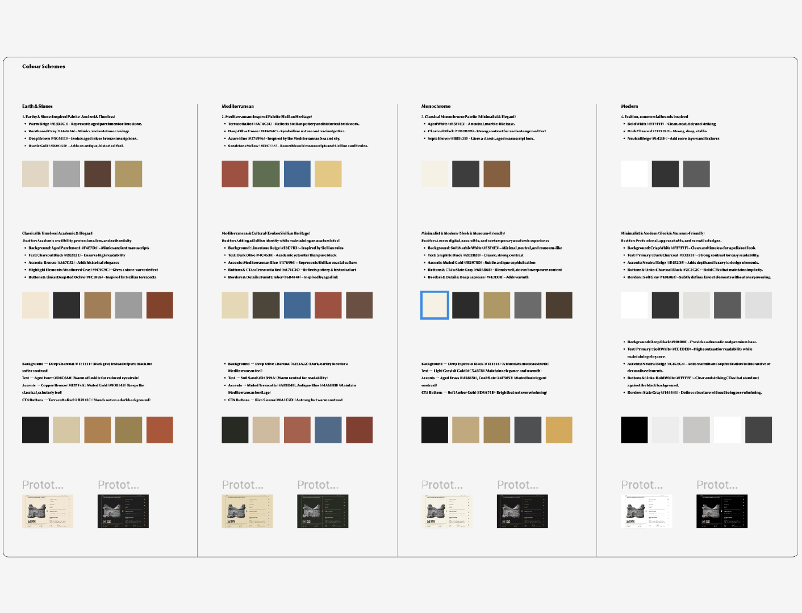
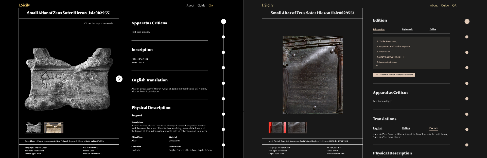
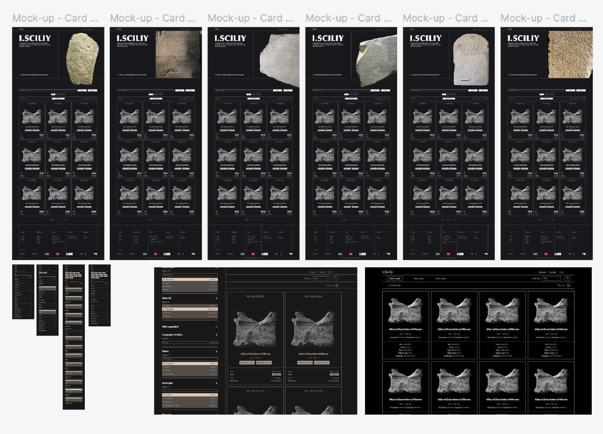
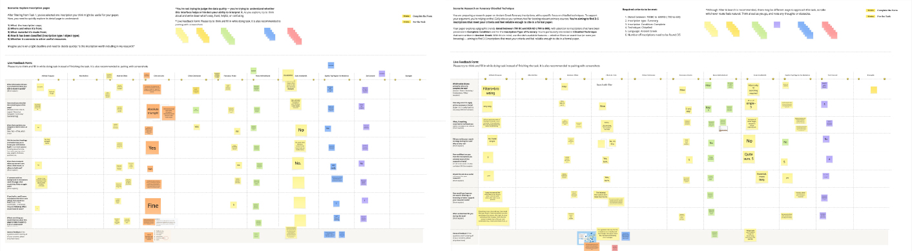

Technical Overview
This page provides an overview of the technical solution used to build and present the I.Sicily digital corpus. The project was designed with sustainability, modularity, and openness as guiding principles.
Technologies and Processes
Data Standards
The core dataset for the project relies on the EpiDoc TEI-XML standard. This is used to encode all information about the inscriptions and the inscribed objects, as well as the actual text itself.
Data is standardised and made potentially interoperable by the use of recognised vocabularies:
- Pleiades gazetteer of ancient places
- EAGLE epigraphic vocabularies
- FAIR Epigraphy vocabularies
- BGS Rock Classification Scheme for petrographic data
Development
The project solution is built using a monorepo structure with two main components:
- An ETL (Extract, Transform, Load) process for handling and enriching XML files
- A static website built with SvelteKit configured as a Static Site Generator (SSG)
The site generates plain HTML, CSS, and JavaScript files that can be served by any standard web server (like Nginx or Apache). This means it does not require a Node.js or any other application server to be running.
Key frontend dependencies include:
- bits-ui for User Interface (UI) components
- itemsjs for faceted search
- mdsvex for markdown content
- unovis for data visualisations
- OpenSeadragon for IIIF image viewing
- MapLibre GL for interactive maps
Data Workflows and Models
The project workflow processes EpiDoc TEI XML files, enriches the original input corpus, and presents it on a static website. Individual editions are published as HTML pages but can also be searched and filtered, as well as being freely available for download.
High resolution images, where available, are presented via a IIIF server.
Annotation Layers
The corpus integrates multiple annotation layers, each feeding metadata into the inscription pages, faceted search, and other dynamic pages:
Linguistic Annotation
Linguistic annotation has been undertaken on a Greek and Latin subset of the corpus, alongside tokenisation and lemmatisation of the complete corpus.
Palaeographic Annotation
Palaeographic annotation is conducted through a dedicated digital palaeographic environment with its own web application and interface (Annotator) also served and documented via a dedicated Github repository. The environment lets the user define the palaeographic structure of allographs and then create thousands of Web Annotations (Web Annotation Data Model) that bind graphs as they appear on inscription images (using IIIF Image API region format) with their occurrences in the EpiDoc edition (fetched from a Distributed Text Services (DTS) collection) and the formal description of their structure. A faceted search interface allows the researcher to filter graph annotations by their structural patterns and define a high-level typology of allographs. The list of letter types identified for each annotated inscription are then added to the TEI file and so visible on the corpus website with links back to the palaeography environment. These types are also searchable from the ‘Lettering’ filter in the list of facet options, thus integrating them with the rest of the exploration possibilities within the entire corpus, even though only a selection of inscriptions underwent palaeographic analysis.
Petrographic Annotation
Petrographic analysis has been undertaken on hundreds of items across the corpus. The dataset includes raw and processed data from (geo)chemical and minero-petrographic analyses on epigraphic supports, supporting the identification of rock types and their provenance. Geology-specific vocabularies (The BGS Rock Classification Scheme) are used as reference to update the XML files with material and material provenance data. Materials description has been augmented via a dedicated RSE-supported workflow which aggregates the multi-analytical data collected by the project’s material scientist and supports (pre)processing and analysis of different data by streamlining repetitive tasks and simplifying data interpretation, eventually leading to the identification of the rocks where the texts (in Latin, Greek and other languages) are inscribed, and therefore their provenance. This research workflow is summarised in technical documentation (ADD diagram below), research dissemination (e.g. Coccato et al., 2025a; Coccato et al., 2025b; Ciula et. al., 2025; Ciula, 2025) and the actual code used to implement the petrographic research environment.
![Flowchart showing the petrographic analysis workflow. An Inscribed Object yields a Sample and Digital Microscopy images. The Sample is divided into Powders and Fragments. Powders undergo pXRF spectral analysis and XRD diffractometry. Fragments are examined via Digital and Optical Microscopy. All four analytical results feed into a decision point: is the material Marble? If no, the workflow proceeds directly to Analysis and Interpretation. If yes, Isotopic Analysis and Maximum Grain Size comparisons are performed before reaching the final Analysis and Interpretation stage.](https://mermaid.ink/img/pako:eNqNVWFP2zAQ_SuREVORUlaaJm2iiYk2dEJaB6KTxtbywU3c1iOxI8cZLVX_-3x2CGnEBpw44Xvv7my_I96hiMcEBWglcLa2vodzZqmf42NrgimzfnDxsEz4o4leL363rlgeCbogMaxIJE8MNMVp1gKXkDJywx_jFjgi8jI0FnjVApcSJp-Dxmd3t-MZOGuaqaoCf1qIj-dfKSNYWLdkJUieU85y64MGLhMCNaBiJCF-b8rc3YYz9WuFdLkEiKdEiq1OmahaAifWCCdRkWBZqzaVmMVYxPRJh-_rGwvpis7ASZU7oZHgecSzbcm5ziSdgYteQ42_yrmcgeMZjawLhpNtTnPd-IYn2xVn1hWT6pbIwVG-CCXAbII3NC1Ss7Km9InoRLVkRWJOZ414mmFB88bOJ1gsduAS8nlfCkBV91breQ_l8XX3TBCpT3-idKmGYMQZK7dVjYDVbp9rvQ8jcEf19sDQAMxAIwQzUOcCRQMwAY2QkrNOhdRGvyoEQjSHSgNwC9WANCJQpxGCOo3Qy5UqwJqjnySfI80BZf-Nat2a8DdeolqP5qw0ESN9LVipM5WckfYQ5-q_cVJI5adym1BW3m2uFkTrs6RJEhz1O4OO37FzKfgDCY66454yO-IJF8HRcrkskfYjjeU66Gabehmtnalz4YNVdTwfrFannqZlNGmhA1alDTpgda7W0XBHHbBXufUMLbDJuPQuO2HvJWPYD71hnQvKv5OqR6Lc9Ais4pqjH1wvzMqb3HqGngOTMXbBGsf8rwx6QMrki7E_9qrksDvsDUZ1rhmcN8kHEsCElSmu6w274_eOi5NtkK1eERqjQIqC2CglIsWwRDtoMUdyrT7acxSoPxkp1Dc-mSPbQPDGRGssJMC7cl8oKsSfMiHljMO0380RoOp7tlftMsx-cZ4-dxS8WK1RsMRJrlZFFmNJQorV0_ZCIUw9SCNeMIkCX1dAwQ5t1OLUHwx8_6zv9B3P7XcdG21RcOZ2Tz3f7bpnPa836Dl9d2-jJ92zczo4c9yu5zpOx_dcv2cjElPJxcS8qPph3f8FgBxDxw?type=png)
Figure 1: Petrographic analysis workflow, from sample preparation through multi-analytical characterisation to rock identification and provenance determination.
Workflows
![Flowchart showing the Corpus Building workflow. EpiDoc and XSLT submodules feed into an ETL Process, which also fetches citations from the Zotero API. The ETL Process transforms XML via Saxon-JS to produce processed HTML fragments, and extracts data into JSON files. Both the processed HTML and JSON files, along with Markdown files, feed into the Static Site Generator, which also uses the JSON files as a search index. The generator produces static HTML pages that serve Inscriptions, Search and Filters, Interactive Visualisations, and Open Data Endpoints.](https://mermaid.ink/img/pako:eNplUl2P2jAQ_CuWnwFxIWk-Hk66I8kBhR5SUIVweHCTPbBK7MhxWlrCf-8mhLuqffPu7OzOrPdCM5UDDehB8_JINmEqn1hUilBlJKm_FSqvT7Anw-EjeWbRZknWWmVQVftUbtk2WW7-q0rlju2UAa3I03qOydHwsYnBZEcyFYYboWTVtGXPbX2z0VxWb0oXZLtaNmTKEn5WcrhIcMK0q5htVksSa34oQBqkhqzXADlpsf29VXQ2mmeGhNzwhkRskbx-IbE4Qas27NTFLGkloDdhgLyABM2N0ohHNzyVL2zF9fdc_ZQ9t3PQInE3pScBWfMDoJzZvWWvJbo5ToBrtDyXOZyblj279ZmzuawyLcpuEfv3_GfWM7jM28G4wL_QBbIwg-7EDyBfRVXzk6j4Pz2W7LUE2fknkcxLJXBhezrAzxU5DYyuYUAL0AVvQ3pJJSEpNUcoIKUBPiXUuMJTSlN5RVrJ5U6p4s7Uqj4cafDGTxVGdZnjFkLB8XI-SgD96qmqpaHBp64DDS70TIOJPRpbju857oPruhPbHtBfNPDHo7FtWxPHsnzbtx7864D-7kaOR54_sTzP9jzLdSx34gwo5AI_a3U72O5ur38AqRfjQQ?type=png)
Figure 2: Corpus Building workflow, from EpiDoc source files through ETL processing and static site generation to the published website outputs.
Architecture
The project uses a monorepo structure with the following components:
| Directory | Description |
|---|---|
packages/etl/ | ETL package for processing XML |
frontend/ | Static site generator web application |
data/raw/ | Git submodule for the EpiDoc files |
data/processed/ | Output data generated by the ETL process |
xslt/epidoc/ | Git submodule for XSLT stylesheets |
Deployment
The site is available both as a staging instance for testing, and a public production site served via GitHub Pages.
The set of granular standard-compliant data files (DTS, EpiDoc, Web Annotations, etc.) versioned on and served from public code repositories is independent from the software. This portability and sustainability requirement was a consideration in all design and development work.
Design Process
The design of the site was informed by initial discussions around the information architecture and review of static mock-ups.

Figure 3: Early information architecture to map out the user experience and wireframing iterations exploring multiple feature views.
This diagram outlines the restructuring of the platform into a flatter, more accessible hierarchy compared to the previous instance of I.Sicily (see acknowledgements below). The goal was to streamline key user flows (search → results → inscription), and balance quick access for new users with advanced functionality for researchers.
The iterations below exemplified in the figures focus on structuring the core interaction model - combining search, filters, and result views (list, table, map) into a cohesive and flexible interface. The aim was to minimise cognitive load while supporting both exploratory browsing and precise academic queries.

Figure 4: Colour system exploration, balancing visual identity, readability, and accessibility.
Multiple colour palette directions were designed and tested to reflect the historical context while ensuring strong contrast and accessibility requirements. Iterations focused on readability, hierarchy, and creating a consistent visual language that works across complex data interfaces.

Figure 5: Inscription detail page design and iterations, integrating and optimising images, metadata, and academic content.
The inscription detail page was designed to handle complex, layered information: combining imagery, transcription, translation, and metadata.
In the early version, the page followed a single-column layout, with metadata positioned below the inscription image. To improve usability (particularly for comparison and reference while reading), this was redesigned into a side-by-side layout, with a fixed image and scrollable metadata panel.
Further iterations explored how to present this content clearly while maintaining academic depth and supporting different reading behaviours.

Figure 6: Landing page and search experience iterations, focusing on functionality, clarity and entry points into the dataset.
The homepage was designed to immediately guide users into the dataset through a prominent search and filtering system.
Iterations focused on hierarchy and call-to-action clarity, establishing search as the primary entry point. The design balances accessibility for first-time users with the depth and flexibility required for more advanced academic research.

Figure 7: Remote usability testing workshops.
Usability workshops with a group of representative prospective users identified bugs as well as user interface and user experience refinements which have been prioritised collaboratively and integrated into the current interface.
These were run with a mix of users to observe how they interact with search, filters, navigation, and inscription pages. Feedback was captured in real time, highlighting pain points, confusion areas, and differences between expert and non-expert users. Insights from testing informed refinements to interaction patterns, layout, and clarity. The data visualisation section builds on patterns from previous KDL projects, combining established structures with tailored UX/UI decisions for this project.
Community Value
By integrating different layers of annotations in the same publication, the site converges benefits from multiple communities:
- Researchers: Multidisciplinary researchers involved in the project are empowered to conduct data quality and analysis on the integrated corpus
- Museums: Repositories where the actual inscription objects are held gain visibility and enrichment to their collections under the same integrated digital space
- DH Teams: Other collaborative Digital Humanities teams may adopt similar solutions for cultural heritage online corpora that rely on open standards and open architectures
Source Code
Acknowledgements
This project has received funding from the European Research Council (ERC) under the European Union’s Horizon 2020 research and innovation programme (CROSSREADS, grant agreement no. 885040). A previous instance of I.Sicily on which the requirements of the current solution is based was created and developed by Jonathan Prag, with the technical support of James Cummings and James Chartrand of OpenSky Solutions (see Prag, 2021 and Prag and Chartrand, 2019).